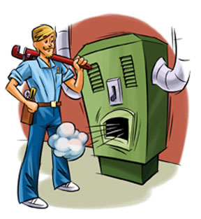
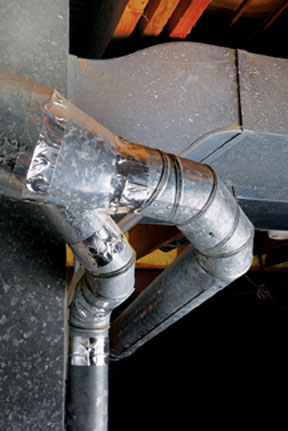
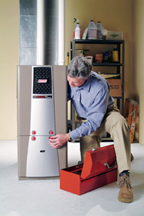

Although the number of homes heated by clean, renewable solar energy is growing, the majority still rely on fossil fuels (natural gas and fuel oil) or electricity generated by nuclear and coal-fired power plants. With the cost of these fuels on the rise, it’s becoming increasingly expensive to stay warm in the winter. Fossil fuel combustion also contributes to climate change, as well as acid rain and air pollution.
Concern for these issues has caused many people to consider replacing old, inefficient furnaces with energy-efficient models. If your furnace is more than 15 years old or is frequently in need of costly repairs, or if you’re planning to add on to your home and need to upgrade your furnace to heat the additional space, consider installing an Energy Star-qualified model.
Heat pumps, solar hot water systems and woodstoves are excellent options, but they don’t fit everyone’s budget, home or lifestyle.
An energy-efficient furnace will cut your utility bill substantially, saving hundreds of dollars a year. (See Savings from an Energy-Efficient Furnace.) By reducing electricity use, efficient furnaces help reduce air pollution produced by conventional power plants. They also can improve the air quality of your home.
Before you invest in a new furnace, it pays to make your home more energy efficient. Some actions you can take include sealing the leaks in the exterior walls, attic and roof; then adding insulation and installing insulated window shades. These and other projects will save money over the long haul and could even allow you to reduce the size (heat output) of your new furnace - smaller furnaces cost less.
Numerous companies manufacture high-efficiency furnaces for forced-air heating systems. Let’s review the options and features you should look for.
Conventional gas furnaces are usually located in a basement, utility room or a well-vented closet. They contain a combustion chamber where natural gas or propane is burned. The burner is ignited by a pilot light, a flame that burns 24 hours a day.
In a conventional furnace, air from rooms in the house enters the furnace via the cold-air return ducts. Heat generated in the combustion chamber is transferred via a heat exchanger and distributed throughout the home by a duct system. The heated air is propelled through these ducts by a powerful (and sometimes noisy) electric blower. Waste gases (containing toxic pollutants) from the combustion chamber are vented to the outdoors through a flue pipe. As the hot gases rise, they create a partial vacuum in the combustion chamber. This draws air from the house into the fire, ensuring the continuous supply of oxygen required for proper combustion. The rise of hot air, together with the inflow of air, is known as draft.
Conventional natural-draft furnaces are the least efficient of all furnaces. Those manufactured before 1992 have efficiencies below 78 percent. Many are only 55 percent to 65 percent efficient, which means they convert only 55 percent to 65 percent of the fuel they burn into heat. The rest is wasted.
High-efficiency furnaces produce a lot more heat from the fuel they burn, saving homeowners substantially over the long haul. Most high-efficiency gas furnaces are induced-draft models - so named because they contain an energy-efficient electric fan. It draws air from outside the home into the combustion chamber and propels exhaust gases from the combustion chamber out of the house via the flue pipe. The efficiency of induced-draft furnaces results from the use of more efficient heat exchangers, but also from an electronic ignition, which eliminates the need for a constantly burning pilot light.
The most efficient gas furnaces on the market today are condensing models. These furnaces contain a second heat exchanger, which extracts additional heat from the flue gases, cooling them until the moisture they contain condenses. (Condensation of moisture releases additional heat.)
Both condensing and non-condensing furnaces can be equipped with sealed combustion chambers. This feature prevents dangerous exhaust gases, such as carbon monoxide and nitrogen dioxide, from entering our homes.
When shopping for a new furnace, look for Energy-Star qualified models. Their efficiencies, which are listed as annual fuel utilization efficiency (AFUE), run from approximately 83 percent to 97 percent. As a rule, the induced-draft furnaces have efficiencies in the 80 percent range, and induced-draft condensing furnaces are in the 90 percent range.
Home furnaces in many colder parts of the country burn fuel oil, a petroleum product. It’s injected into the furnace’s combustion chamber through a nozzle that produces tiny droplets that mix with air to promote combustion.
Most Energy Star oil furnaces boast efficiencies in the 83 percent to 86 percent range, with condensing oil furnaces at about 95 percent. All of these are much higher than oil furnaces made before 1992. Older furnaces are typically only 50 percent to 60 percent efficient.
Although condensing models are more efficient, they’re not common. Fuel oil contains many more contaminants (such as sulfur) than natural gas or propane. Condensing out of the combustion gases, these contaminants produce a corrosive liquid that can damage the internal components of an oil furnace. For this reason, contractors don’t often recommend these models.
While sealed combustion chambers are widely used in high-efficiency gas furnaces, few high-efficiency oil furnaces come with this feature. Experience has shown that cold outside air drawn into the combustion chamber of an oil-fired furnace reduces combustion efficiency and may impede start-up.
Installing an energy-efficient furnace requires removing your old equipment. In old houses, watch out for asbestos, which may be wrapped around boilers, furnaces, and hot water or steam pipes, as well as around old furnace ducts. Asbestos should be removed only by a hazardous-waste specialist.
Installation also may require a new flue and air intake for induced-draft models. Electrical and gas service must be temporarily disconnected. All of these steps require considerable knowledge and skill and should be performed by professional installers. (Working with gas lines carries a risk of explosion, too.) In many locations, installers must be licensed by the state.
Although energy-efficient furnaces are typically more expensive than less efficient models, the higher initial cost is often offset within a few years through lower energy bills. After this period, the new furnace becomes a source of tax-free “income.” Remember, too, that the higher upfront investment also provides a hedge against rising fuel costs.
Many incentives are available to homeowners and can help lower the initial cost of a more efficient furnace. Visit the Database of State Incentives for Renewables & Efficiency, and check with your energy provider.
When buying a new furnace, be sure the system is properly sized to your home, especially if you have retrofitted your home for energy efficiency. Contractors often oversize furnaces based on the misconception that this will ensure plenty of heat. Unfortunately, oversized furnaces tend to cycle on and off more frequently than properly sized systems. This, in turn, results in less-efficient operation. (It takes a while for a furnace to reach maximum efficiency, so if it is cycling on and off, it runs at peak efficiency less often.) Start-ups also require more fuel. All of these factors mean more fuel consumption - which may offset new furnace efficiency gains.
According to the U.S. Department of Energy, heating systems are frequently two or three times larger than required to meet the demand for heat! As a rule, a heating system should be no more than 25 percent larger than the calculated heat load (heat requirement).
Be sure to hire a reputable contractor who is capable of properly installing the new equipment and also capable of accurately calculating the heat demand - taking into account any energy efficiency measures you’ve taken, such as added insulation. Also follow maintenance recommendations and hire a professional to periodically inspect and maintain your system.
The cost to replace a furnace will vary according to the size of your house, energy-efficiency measures you have in place (such as high R-value wall and attic insulation, properly sealed vents, efficient windows or a programmable thermostat), and the features and efficiency of your new furnace. The cost to remove the old equipment may be higher if hazardous materials, such as asbestos insulation, have to be removed.
Removal of an old furnace and installation of a new, high-efficiency gas furnace with 3-ton capacity (1 ton equals 12,000 Btu), for a 2,500 square foot home:
Estimated cost for materials only: $2,525
Estimated total installed cost, including materials and labor: $3,900
What Will You Save? Although highly efficient gas furnaces typically cost $500 to $1,000 more than less-efficient models, they will easily make up the difference in fuel savings because they’re up to 15 percent more efficient. To calculate your potential cost savings, check out the savings calculator (the calculator is in the right column under “Consumers.”) You also can calculate return on investment through the American Council for an Energy-Efficient Economy. (Costs are national averages and do not include sales tax.)
If your home is heated by a forced-air system, it’s a good idea to hire an energy auditor to test for leaks in your ducts. Leaky ducts can lose up to 35 percent of the hot air produced by a furnace. You can seal the ducts with mastic or hire a professional to do the job for you.
According to the U.S. Environmental Protection Agency (EPA), dirt and neglect are the main causes of heating system inefficiency and failure. To prevent problems and lower heating costs, the EPA recommends periodic professional servicing of your system. Also clean or replace air filters in forced-air systems every month or two during the heating and cooling seasons.
This article is excerpted from Green Home Improvement, by Mother Earth News contributing editor Dan Chiras.
|
 KEITH WARD Investing in a new, energy-efficient furnace may save you money in the long run, especially with increasing fuel costs. |
 ISTOCKPHOTO/DAVE HERRIMAN Consider energy-saving measures, such as sealing duct joints with mastic instead of metal tape as shown above. |
 COLEMAN HEATING & AIR CONDITIONING Many cities require a licensed installer to replace a natural gas or oil furnace. |